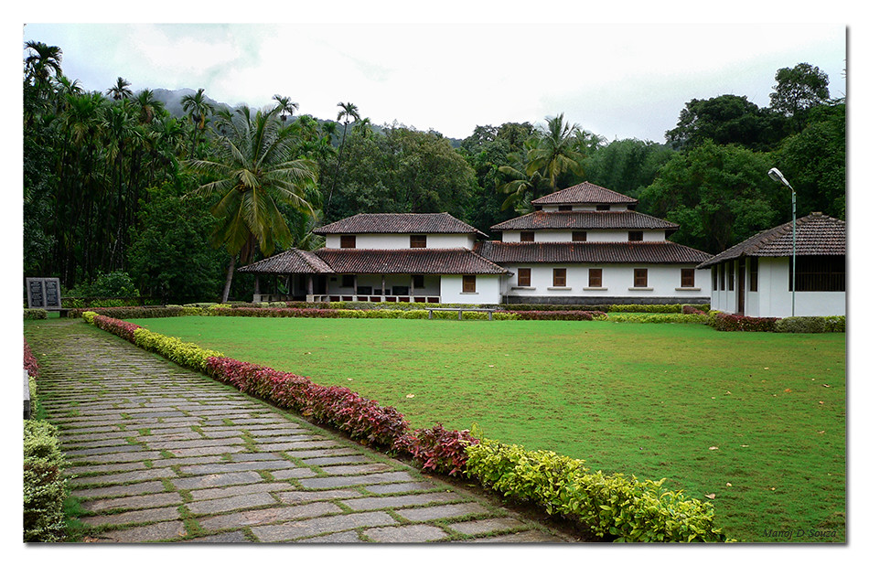
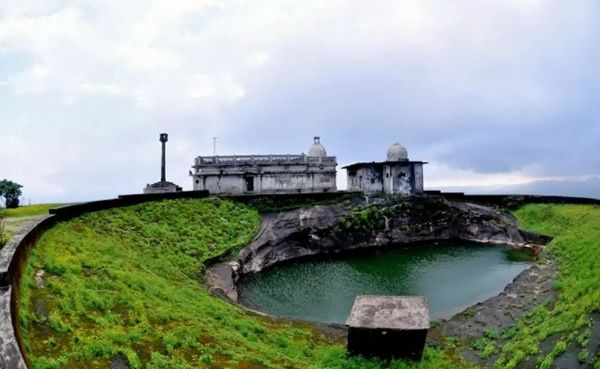

Koppa, a town in the district of Chikmagalur, is often referred to as the Kashmir of Karnataka. Although it does not experience snowfall due to its location in the southern part of India, it does promise adventure. Adventures in Koppa include trekking on the mighty hills, taking a tour around the coffee and the tea plantations and following the river route to explore the ruins of many temples on the banks of Tunga river. Here bring to you the best of Koppa on today’s read.

KAMANDALA GANAPATHI
Kamandala Ganpati Temple is a holy shrine of Lord Ganesha that is located in the middle of a forest in the Kasave region. The most unusual thing about this temple is that there is a hole called Brahmakund right in front of the temple’s presiding deity from which water keeps flowing throughout the year.

KAVI MANE-KUPPALLI
Kavimane is the ancestral house of Kuvempu. Nestled in the midst of green forests of Malnad, the house presents a scintillating view. It is a three-storeyed tiled house including the ground floor and is the house where Kuvempu spent most of his childhood. This house has now been renovated and converted into a museum. The architecture of the house is what is locally called as Thotti Mane, in which the house consists of a central square area resembling a Thotti (pond) that is open to the sky and surrounded by a courtyard.
HANGING BRIDGE
Hariharapura also boasts of a 110-year-old bridge across the Tunga connecting it to Koppa. This bridge is believed to have been built by Sir M Visvesvaraya. The structure is unique for its cable suspension, and the sight of Thunga in all her majesty is quite a view from this bridge.

KUNDADRI HILLS
Cloud-surfing views of the Western Ghats, two beautiful ponds on the hill-top and a Jain Basadi with a history of 2000 years – ‘peace’ and ‘serenity’ sum-up Kundadri Hills. Kundadri hills are famed for their trekking expeditions in the Western Ghats.